En X-rapport er en mellomrapport som genereres fra et kassasystem (datakasse) for å vise salgstransaksjoner og kontantbeholdning på et gitt tidspunkt uten å avslutte kassedagen. Denne rapporten gir bedriften kontinuerlig oversikt over omsetning, betalingsmetoder og kontantstrøm i løpet av en arbeidsdag. X-rapporten er et viktig verktøy for daglig driftskontroll og internkontroll i detaljhandel og servicevirksomheter.
Seksjon 1: Grunnleggende om X-rapport
X-rapporten er en ikke-avsluttende rapport som kan trekkes flere ganger i løpet av en dag uten å påvirke kassasystemets funksjonalitet eller tellere. Dette skiller den fra Z-rapporten, som avslutter kassedagen og nullstiller tellerne.
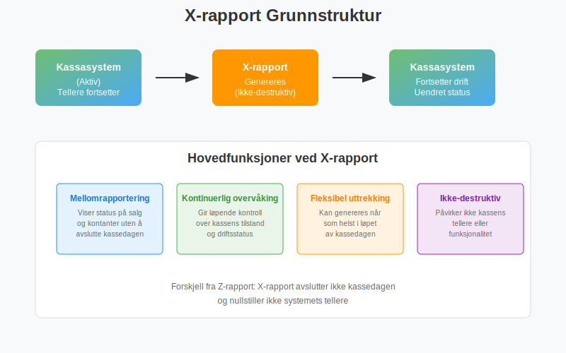
Hovedfunksjoner ved X-rapport
- Mellomrapportering: Viser status på salg og kontanter uten å avslutte kassedagen
- Kontinuerlig overvåking: Gir løpende kontroll over kassens tilstand
- Fleksibel uttrekking: Kan genereres når som helst i løpet av kassedagen
- Ikke-destruktiv: Påvirker ikke kassesystemets tellere eller funksjonalitet
X-rapporten brukes primært for daglig driftskontroll, mens detaljerte regnskapsopplysninger som merverdiavgift og periodisering behandles gjennom andre regnskapsprosesser.
Seksjon 2: Innhold og Struktur i X-rapport
En X-rapport inneholder normalt følgende hovedelementer organisert i en strukturert oversikt:
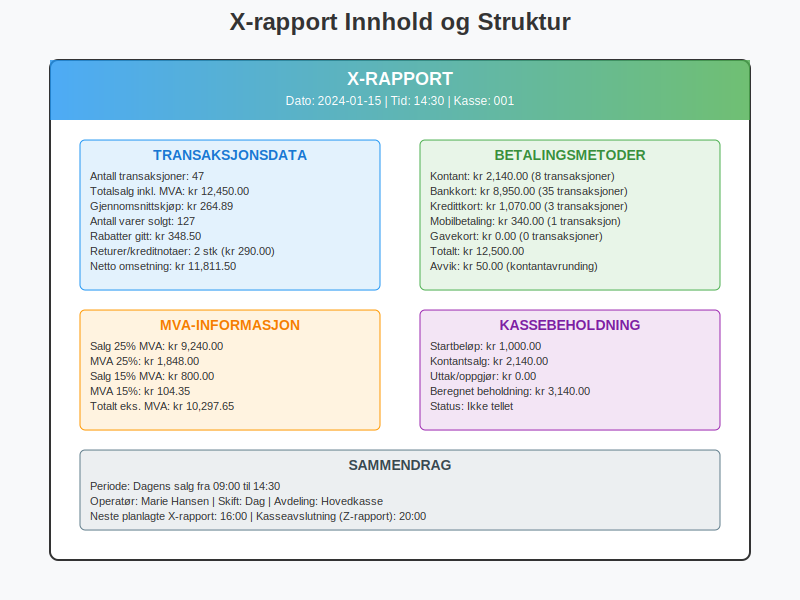
Transaksjonsdata
| Kategori | Innhold | Formål |
|---|---|---|
| Salgsdata | Antall transaksjoner, totalsalg, gjennomsnittskjøp | Salgsoversikt |
| Betalingsmetoder | Kontant, kort, mobil, gavekort | Betalingsfordeling |
| MVA-informasjon | Salg ex. MVA, MVA-beløp per sats | Avgiftsrapportering |
| Refusjoner | Antall og beløp for returer/kreditnotaer | Kvalitetskontroll |
Kassebeholdning
X-rapporten viser også kontantbeholdning basert på:
- Startbeløp: Kontanter i kassen ved dagens start
- Kontantsalg: Alle kontantinnbetalinger i løpet av dagen
- Uttak: Eventuell kontantuttak (mellomoppgjør)
- Beregnet beholdning: Teoretisk kontantbeholdning basert på transaksjoner
Dette gir grunnlag for kontanttelling og identifisering av eventuelle avvik.
Seksjon 3: Praktisk Bruk av X-rapport
X-rapporter brukes i flere praktiske situasjoner for å sikre god kassestyring og oversikt over daglige operasjoner.
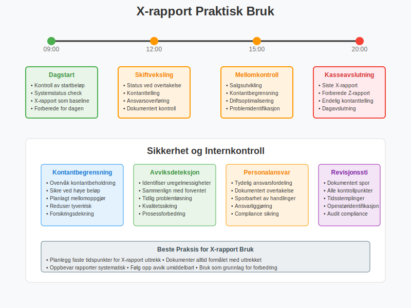
Daglig Driftskontroll
Mellomkontroller i løpet av dagen:
- Skiftveksling: Kontroll av kasse ved personalskift
- Mellomoppgjør: Sikring av kontanter ved høy omsetning
- Driftssituasjon: Overvåking av salgsutvikling i sanntid
- Problemløsning: Identifisering av avvik eller systemfeil
Sikkerhet og Internkontroll
X-rapporten bidrar til bedriftens sikkerhetssystem:
- Kontantbegrensning: Overvåking av kontantbeholdning for sikkerhet
- Avviksdeteksjon: Tidlig identifisering av uregelmessigheter
- Personalansvar: Tydelig ansvarsfordeling ved skiftveksling
- Revisjonssti: Dokumentasjon av alle kontrollpunkter
Seksjon 4: Forskjell mellom X-rapport og Z-rapport
Forståelsen av forskjellen mellom X-rapport og Z-rapport er kritisk for korrekt kassehåndtering og regnskapsbehandling.
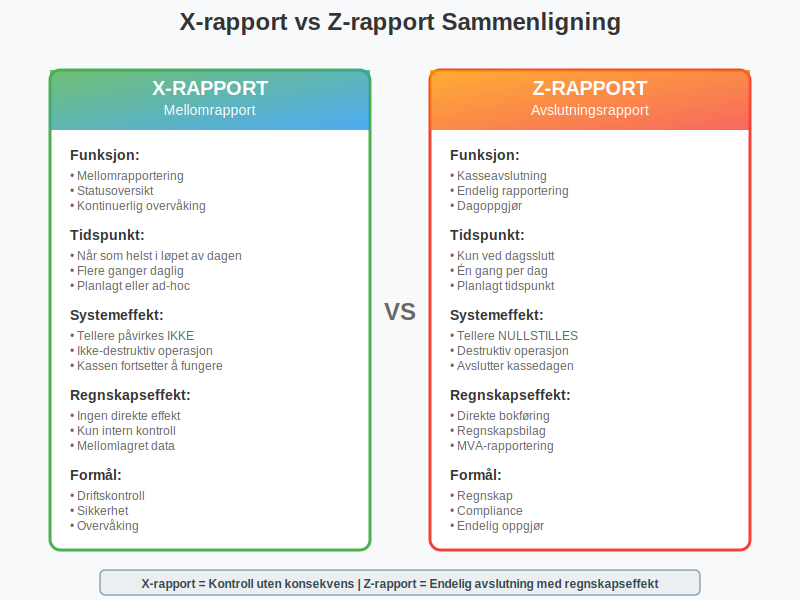
Hovedforskjeller
| Aspekt | X-rapport | Z-rapport |
|---|---|---|
| Funksjon | Mellomrapport | Avslutningsrapport |
| Tidspunkt | Når som helst | Kun ved dagsslutt |
| Tellere | Påvirkes ikke | Nullstilles |
| Hyppighet | Flere ganger daglig | Én gang per dag |
| Regnskapseffekt | Ingen direkte effekt | Grunnlag for bokføring |
Regnskapsmessig Behandling
X-rapport:
- Brukes kun til intern kontroll og overvåking
- Har ingen direkte regnskapseffekt
- Dokumenterer mellomstatus, ikke endelige transaksjoner
Z-rapport:
- Danner grunnlag for daglig bokføring
- Registreres som bilag i regnskapet
- Påkrevd for merverdiavgiftsrapportering
Seksjon 5: Lovkrav og Compliance
I Norge er bruken av kassasystemer og tilhørende rapporter regulert av bokføringsloven og bokføringsforskriften. X-rapporter må oppfylle visse krav selv om de ikke er direkte regnskapsbilag.
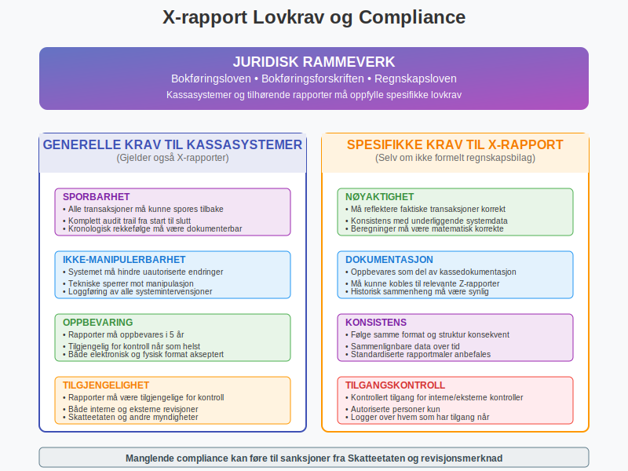
Bokføringslovens Krav
Generelle krav til kassasystemer:
- Sporbarhet: Alle transaksjoner må kunne spores
- Ikke-manipulerbarhet: Systemet må hindre uautoriserte endringer
- Oppbevaring: Rapporter må oppbevares i henhold til oppbevaringsplikten
- Tilgjengelighet: Rapporter må være tilgjengelige for kontroll
Spesifikke Krav til X-rapport
Selv om X-rapporten ikke er et formelt regnskapsbilag, må den:
- Være nøyaktig: Reflektere faktiske transaksjoner korrekt
- Være dokumentert: Oppbevares som del av kassedokumentasjonen
- Være konsistent: Følge samme format og struktur
- Være tilgjengelig: For interne og eksterne kontroller
Seksjon 6: Digitale Kassasystemer og Moderne X-rapporter
Moderne digitale kassasystemer har utviklet X-rapportfunksjonaliteten betydelig utover tradisjonelle kassaapper.
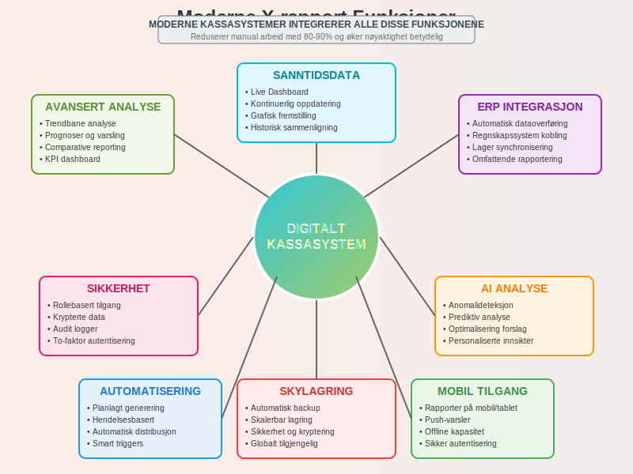
Avanserte Funksjoner
Sanntidsdata:
- Live Dashboard: Kontinuerlig oppdatering av salgsdata
- Grafisk Fremstilling: Visuelle trender og mønstre
- Sammenligning: Mot tidligere dager/perioder
- Prognoser: Forventet totalsalg basert på current trend
Integration med andre systemer:
- ERP-systemer: Automatisk dataoverføring
- Regnskapssystemer: Direkte integrasjon
- Lagersystemer: Sanntids lagerstatus
- Analyseverktøy: Avanserte rapporter og innsikt
Seksjon 7: Automatisering og Teknologiske Trender
Den teknologiske utviklingen har revolusjonert hvordan X-rapporter genereres, distribueres og brukes i moderne forretningsdrift.
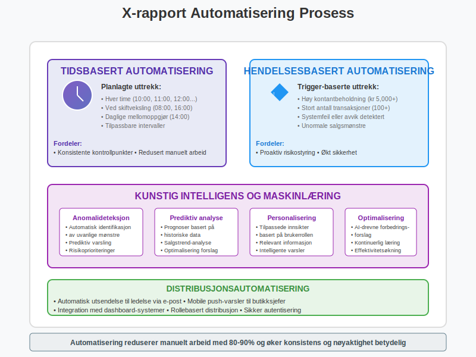
Automatiske Genereringsprosesser
Tidsbasert automatisering:
- Planlagte uttrekk: Automatisk generering på bestemte tidspunkter
- Hendelsesbasert: Triggere basert på salgsvolum eller andre kriterier
- Personaliserte rapporter: Tilpasset forskjellige roller og behov
- Distribusjonsautomatisering: Automatisk utsendelse til relevante personer
Kunstig Intelligens og Maskinlæring
Moderne kassasystemer integrerer AI-teknologi for å forbedre X-rapportenes verdi:
- Anomalideteksjon: Automatisk identifisering av uvanlige mønstre
- Prediktiv analyse: Prognoser basert på historiske data
- Personalisering: Tilpassede innsikter basert på brukerrollen
- Optimalisering: Forslag til forbedringer basert på dataanalyse
Seksjon 8: Bransjespecifikke Tilpasninger
Forskjellige bransjer har spesifikke behov som påvirker hvordan X-rapporter utformes og brukes.
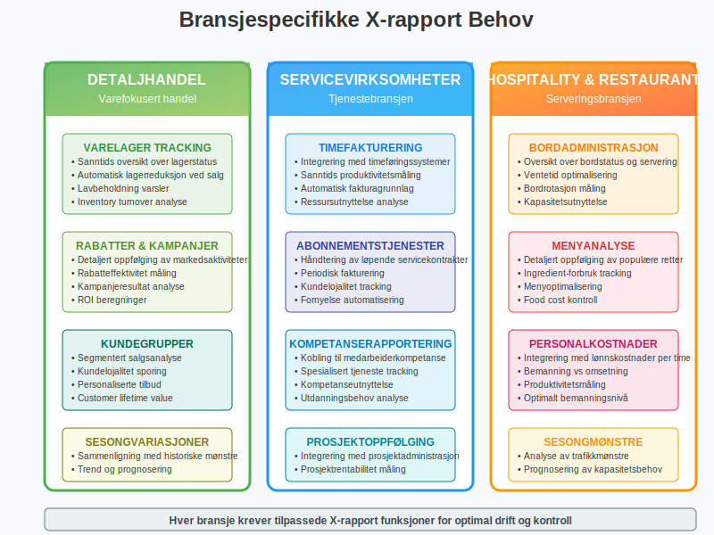
Detaljhandel
Spesielle behov i detaljhandel:
- Varelager tracking: Sanntids oversikt over lagerstatus
- Rabatter og kampanjer: Detaljert oppfølging av markedsaktiviteter
- Kundegrupper: Segmentert salgsanalyse
- Sesongvariasjoner: Sammenligning med historiske mønstre
Servicevirksomheter
Tilpassinger for tjenestesektoren:
- Timefakturering: Integrering med timeføringssystemer
- Abonnementstjenester: Håndtering av løpende servicekontrakter
- Kompetanserapportering: Kobling til medarbeiderkompetanse
- Prosjektoppfølging: Integrering med prosjektadministrasjon
Hospitality og Restaurant
Spesialtilpassinger for serveringsbransjen:
- Bordadministrasjon: Oversikt over bordstatus og servering
- Menyanalyse: Detaljert oppfølging av populære retter
- Personalkostnader: Integrering med lønnskostnader per time
- Sesongmønstre: Analyse av trafikkmønstre og kapasitetsutnyttelse
Seksjon 9: Kvalitets og sikkerhetskontroll
X-rapporter spiller en sentral rolle i bedriftens kvalitets- og sikkerhetssystemer, og krever systematisk oppfølging for å sikre nøyaktighet og pålitelighet.
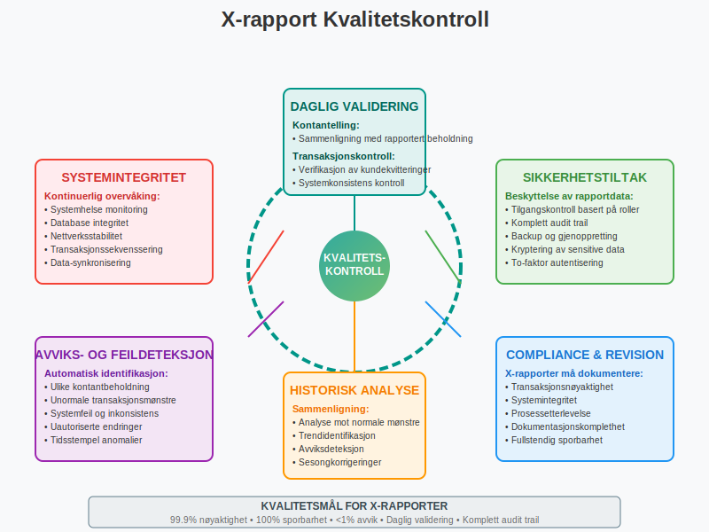
Valideringsprosesser
Daglig validering:
- Kontantelling: Sammenligning med rapportert beholdning
- Transaksjonskontroll: Verifikasjon av kundekvitteringer
- Systemkonsistens: Kontroll av systemintegritet
- Historisk sammenligning: Analyse mot normale mønstre
Sikkerhetstiltak
Beskyttelse av rapportdata:
- Tilgangskontroll: Begrenset tilgang basert på roller og ansvar
- Audit trail: Komplett sporbarhet av alle handlinger
- Backup og gjenoppretting: Sikker oppbevaring av rapportdata
- Kryptering: Beskyttelse av sensitive opplysninger
Compliance og Revision
X-rapporter må kunne dokumentere:
- Transaksjonsnøyaktighet: Korrekt registrering av alle salg
- Systemintegritet: Bevis for at systemet ikke er manipulert
- Prosessetterlevelse: Følge av etablerte rutiner og prosedyrer
- Dokumentasjonskomplethet: Fullstendig sporbarhet av alle handlinger
Seksjon 10: Utfordringer og Beste Praksis
Implementering og bruk av X-rapport systemer kan by på utfordringer som krever systematisk tilnærming og beste praksis.
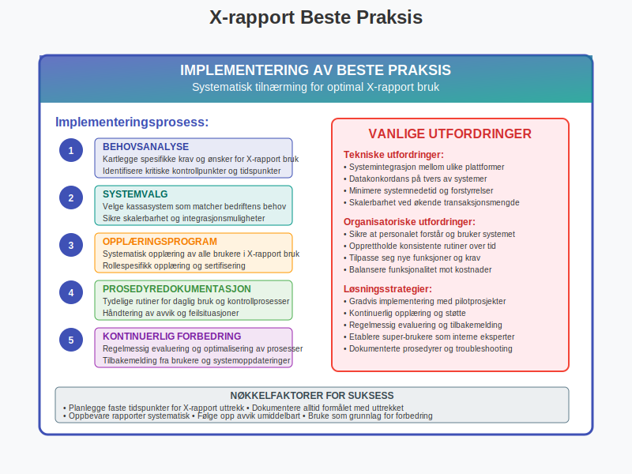
Vanlige Utfordringer
Tekniske utfordringer:
- Systemintegrasjon: Kobling mellom forskjellige systemer
- Datakonkordans: Sikre samsvar mellom forskjellige rapporter
- Oppetid: Minimere systemnedetid og driftsforstyrrelser
- Skalerbarhet: Håndtere økende transaksjonsmengder
Organisatoriske utfordringer:
- Opplæring: Sikre at personalet forstår og bruker systemet korrekt
- Prosessdisiplin: Opprettholde konsistente rutiner
- Endringshåndtering: Tilpasse seg nye funksjoner og krav
- Kostnadskontroll: Balansere funksjonalitet mot kostnader
Implementering av Beste Praksis
Systematisk tilnærming:
- Behovsanalyse: Kartlegge spesifikke krav og ønsker
- Systemvalg: Velge løsning som matcher bedriftens behov
- Opplæringsprogram: Systematisk opplæring av alle brukere
- Prosedyredokumentasjon: Tydelige rutiner for daglig bruk
- Kontinuerlig forbedring: Regelmessig evaluering og optimalisering
Seksjon 11: Fremtidens X-rapport Teknologi
Teknologisk utvikling skaper nye muligheter for hvordan X-rapporter kan utvikles og brukes i fremtiden.
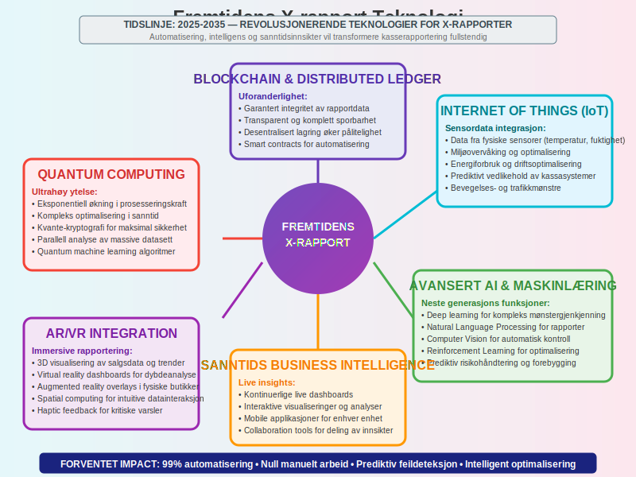
Emerging Technologies
Blockchain og Distributed Ledger:
- Uforanderlighet: Garantert integritet av rapportdata
- Transparent sporbarhet: Komplett transaksjonsoversikt
- Desentralisert lagring: Økt pålitelighet og tilgjengelighet
- Smart contracts: Automatisering av rapportgenerering og distribusjon
Internet of Things (IoT) Integrasjon:
- Sensordata: Integrering av data fra fysiske sensorer
- Miljøovervåking: Kobling til temperatur, luftfuktighet, bevegelse
- Energiforbruk: Optimalisering basert på driftsdata
- Prediktivt vedlikehold: Forebyggende tiltak basert på systemhelse
Avansert Dataanalyse
Machine Learning og AI:
- Mønstergjenkjenning: Automatisk identifisering av trender
- Anomalideteksjon: Prediktiv identifisering av problemer
- Optimalisering: AI-drevne forbedringsforslag
- Naturlig språkbehandling: Rapporter i vanlig språk
Sanntids Business Intelligence:
- Live dashboards: Kontinuerlig oppdatering av nøkkeltall
- Interaktive visualiseringer: Dyp-dykking i data
- Mobile applikasjoner: Tilgang til rapporter på alle enheter
- Collaboration tools: Deling og diskusjon av innsikter
Konklusjon
X-rapporten er et fundamentalt verktøy for daglig driftskontroll i detaljhandel og servicevirksomheter. Som mellomrapport fra kassasystemet gir den kontinuerlig oversikt over salg, betalingsmetoder og kontantbeholdning uten å avslutte kassedagen. Dette skiller den fra den daglige Z-rapporten som har direkte regnskapseffekt.
Moderne digitale kassasystemer har utviklet X-rapport funksjonaliteten betydelig, med integrasjon til ERP-systemer, sanntidsanalyse og automatiserte kontrollprosesser. For bedrifter som ønsker optimal kontroll over sine daglige operasjoner er forståelse og korrekt bruk av X-rapporter essensielt.
Den teknologiske utviklingen med AI, blockchain og IoT vil fortsette å forbedre X-rapportenes verdi og anvendelsesområde, samtidig som grunnleggende prinsipper om nøyaktighet, sporbarhet og compliance forblir kritiske for success.